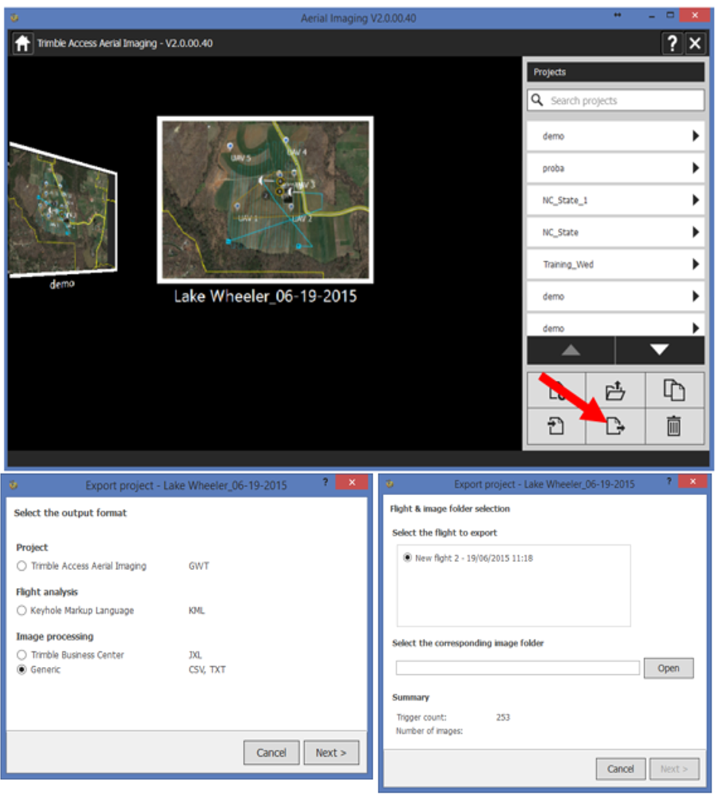
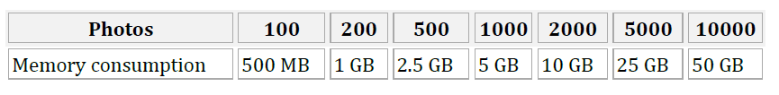
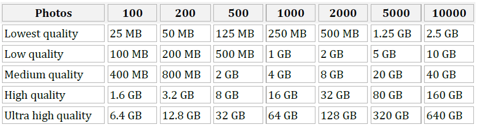
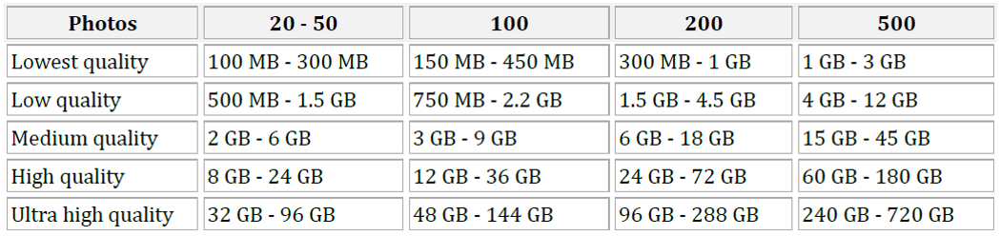
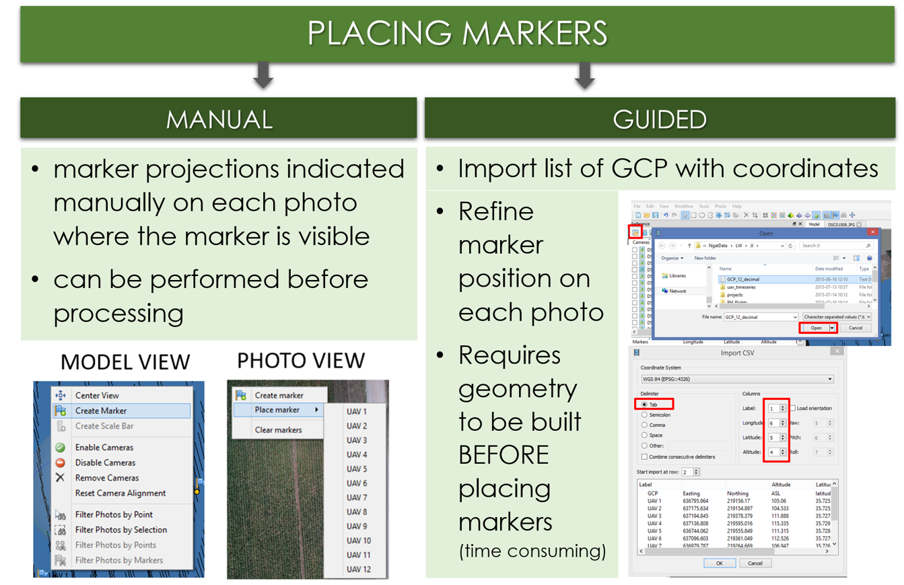
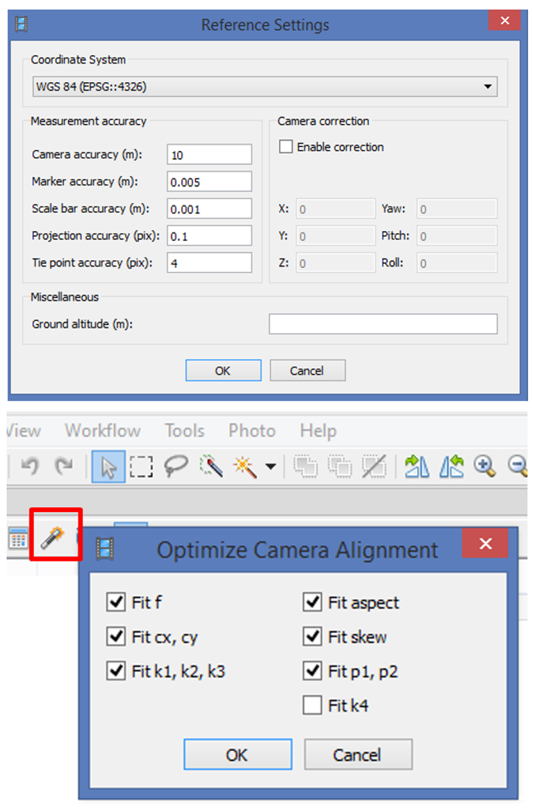

Imagery processing: intro to the assignment
GIS595-004/603; MEA592-006/601:
UAS Mapping for 3D Modeling
Justyna Jeziorska
Possible issues
Processing data from UAS can be challenging. Sources for problems in the processing include
- Data specific issues caused by:
- bad weather,
- failure of hardware (UAS or sensor),
- challenging terrain,
- bad flight planning
- Software specific issues caused by:
- incopability between UAS and software (like file extensions)
- memory problems or lack of computational power
- limitation of the software algorithms
- bad flight planning
Possible issues: log file

Memory requirements
Aligning Photos

Building Model (Height-field mode)

Memory requirements
Building Model (Arbitrary mode)

Decimating Model

Ground Control Points
- Marker positions are defined by their projections on the source photos;
- used for:
- setting up a coordinate system,
- photo alignment optimization,
- measuring distances and volumes,
- marker based chunk alignment.
- more photos used to specify marker position > higher accuracy of marker placement
Ground Control Points

Placing markers
video tutorial
- Click 'Filter Photos by Markers';
- Open an image by double clicking the thumbnail - the GCP will appear as a grey icon;
- Drag the marker to the correct measurement position;
- the marker will appear as a green flag, meaning it is enabled and will be used for further processing.
Optimize Camera Alignment

- Set the marker coordinates for optimization (check markers /uncheck cameras);
- Click Settings toolbar button on the Reference pane and set the coordinate system;
- Specify the assumed accuracy of GCP measurements and marker projections on the source photos
- click 'Optimize Camera Alignment'.
eir projections on the source photos;
Point cloud the texture and mesh is generated again.
In practice: start geoprocessing over, begining from point 2. Build the dense point.
used for:
more photos used to specify marker position > higher accuracy of marker placement